The homepage service sections, before and after
The nine sections Joe listed, developed services-first on the DE diagram system with real content only. Every capture below is the production build of this branch at 1440 and 390 pixels wide, reduced motion, next to the same section as it ships on main today. The three sections marked “maybe” (The Threats Are Real, What We Tackle, Recent Threats & Insights) are untouched.
- Branch
- claude/digerati-experts-v2-scrollcraft-7fkrfd
- Head
- 7dde2ce
- PR state
- Draft · Joe merges
- Production
- Unchanged until merge
| Gate | Result on 7dde2ce |
|---|---|
| Typecheck (tsc --noEmit) | Clean |
| Unit and integration tests (vitest) | 88 files, 390 tests passed |
| Homepage smoke, local replica at 390 / 768 / 1440 | Expected H1 present; the five hero test ids visible; 0 px horizontal overflow at every width |
| CI on the push (typecheck, test, build, audit, smoke) | Passed on 7dde2ce and e5a949c; the review-corrections push is reported on the PR |
| Evidence rules (§38, design/VISUAL_EVIDENCE.md) | No invented clients, metrics, certifications, or telemetry; one real capture (DE Desk) labelled SANITIZED_REAL; the inspection figure labelled EXAMPLE |
IT Trust Partner for Arizona Businesses

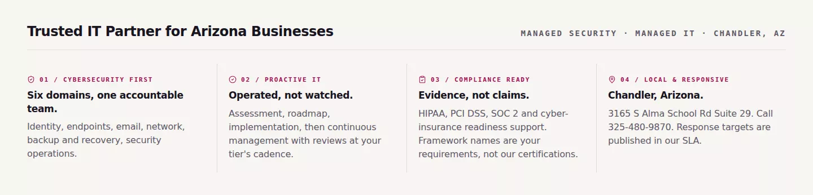
The four trust cards became one hairline-divided editorial row under the heading “Trusted IT Partner for Arizona Businesses”. Each item carries a code, a claim, and a factual line: six domains and one accountable team; assessment, roadmap, implementation, then continuous management; the compliance item now says framework names are the customer’s requirements, not DE’s certifications; the local item carries the real Chandler address and phone number and points to the published SLA for response targets (the earlier “one business day” line was removed after review; the hero’s own line keeps it with its SLA basis). The H1 and both hero buttons are untouched, so the smoke gate’s locators hold.
ProActive Ecosystem
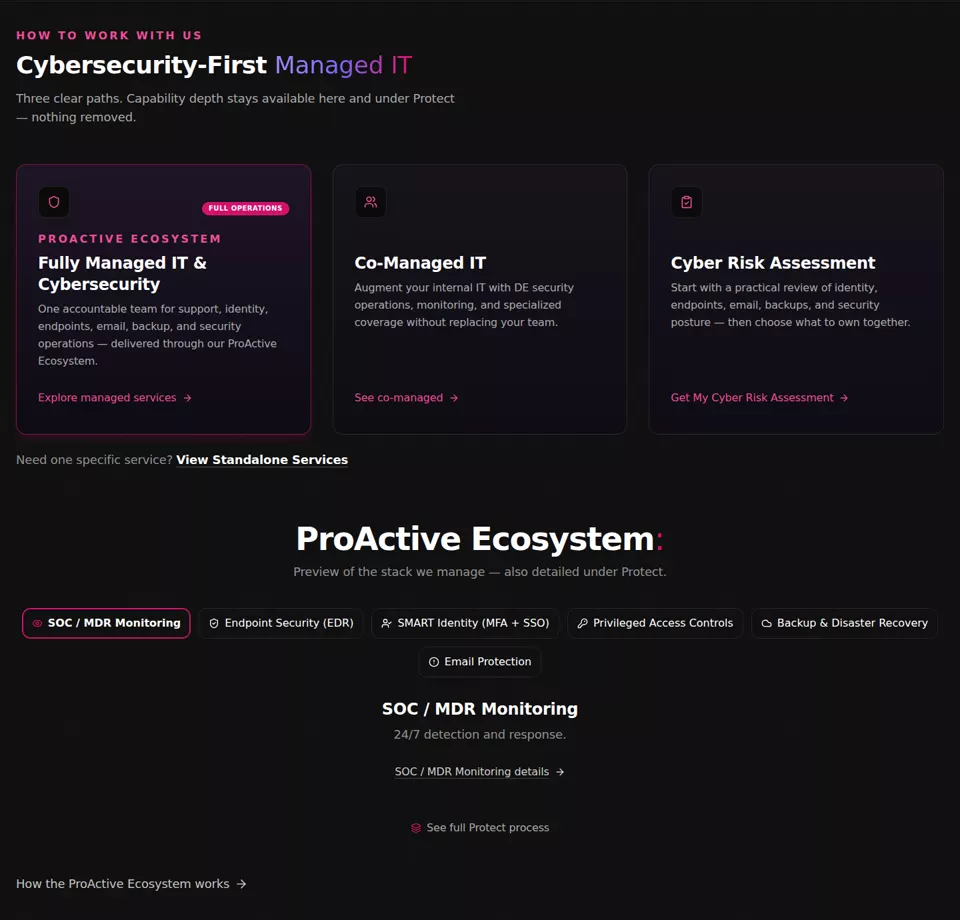
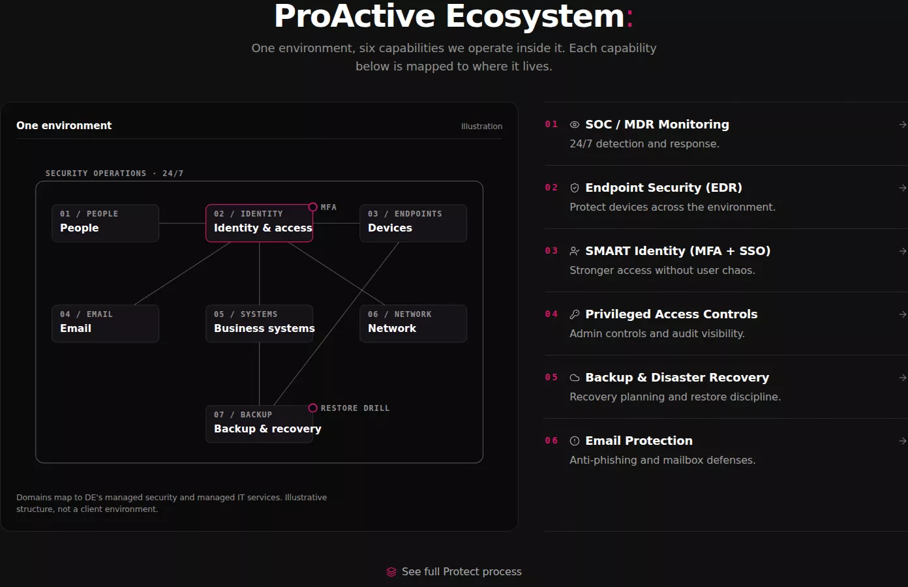
The six capability tiles became the “One environment” diagram beside a hairline capability list. Pointing at a capability lights the node where it lives: SOC / MDR lights the security-operations frame, EDR lights devices, SMART Identity and Privileged Access light identity, Backup lights backup and recovery, Email lights email. The three path cards above and the “View Standalone Services” link are unchanged.
What we protect
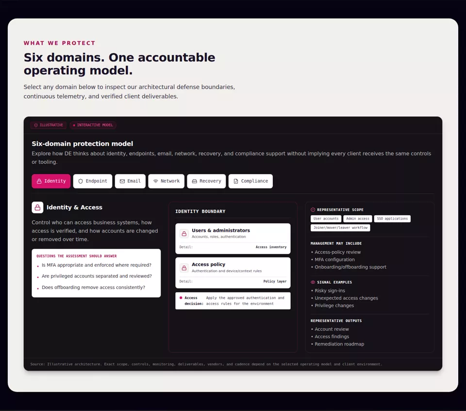
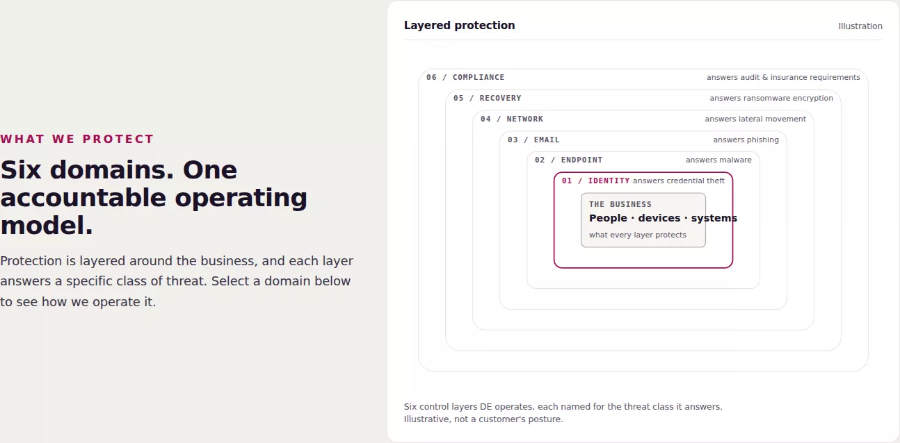
The heading and copy now sit beside the “Layered protection” diagram: six control layers around the business, each named for the threat class it answers, in the deck’s own order. Selecting a domain in the command deck below highlights the matching layer, one magenta layer at a time. On the first capture two layers lit at once; that was a stage-accent collision in the stylesheet and is fixed.
How protection works
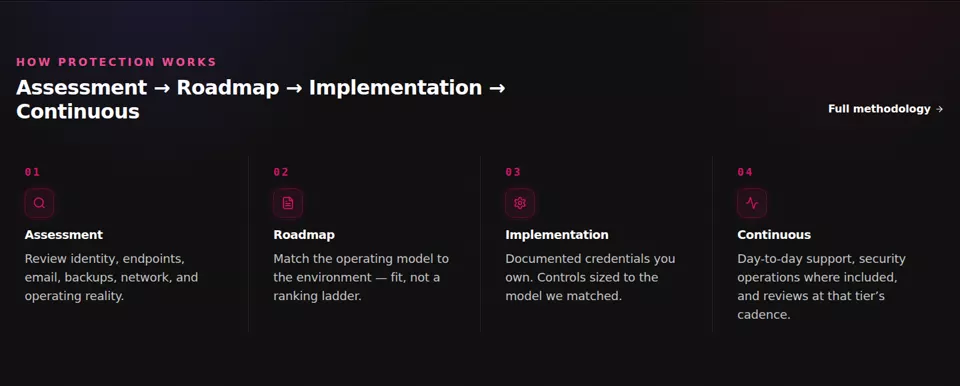

The four step cards became the “operating cadence” diagram beside a numbered hairline list. The list is numbered because the steps are a real sequence: Assessment, Roadmap, Implementation, Continuous. Pointing at a step draws the diagram to that stage; the continuous loop (monitor, review, patch, drill) runs inside stage four. The step links and their test ids are kept.
Client proof → How DE delivers
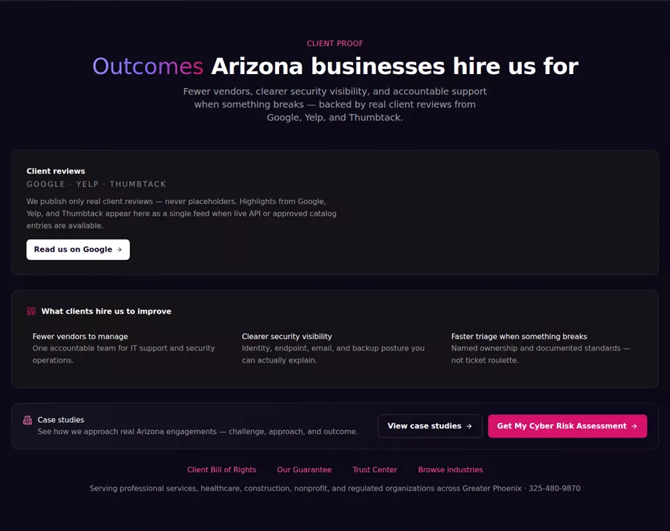
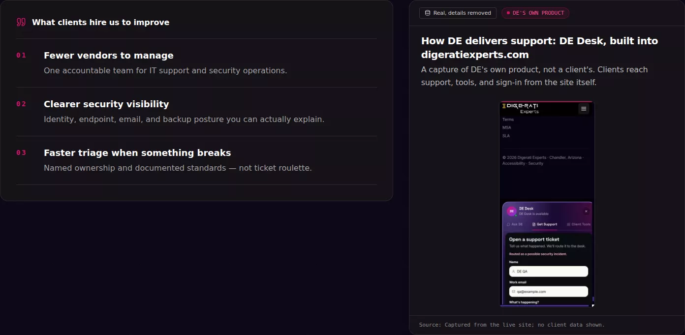
The outcomes became a ledger beside an evidence frame showing DE Desk, the support surface built into digeratiexperts.com. After review the section eyebrow reads “How DE delivers” and the frame is titled as DE’s own product, so a product capture is not presented as client proof; the real client evidence stays the reviews feed above it. No testimonials, client names, or metrics were invented; §38 holds.
Human trust & ownership
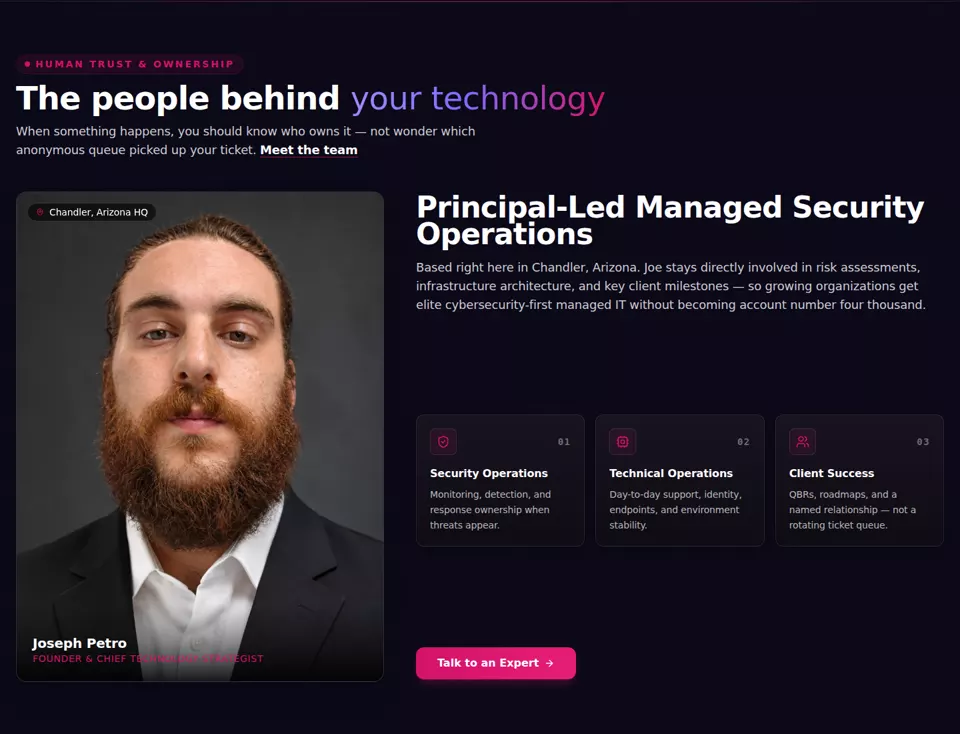

The right side became an ownership ledger: three roles with what each one owns, then “what stays yours” with the Client Bill of Rights link. The left side and the “Talk to an expert” button are unchanged.
ProActive Ecosystem
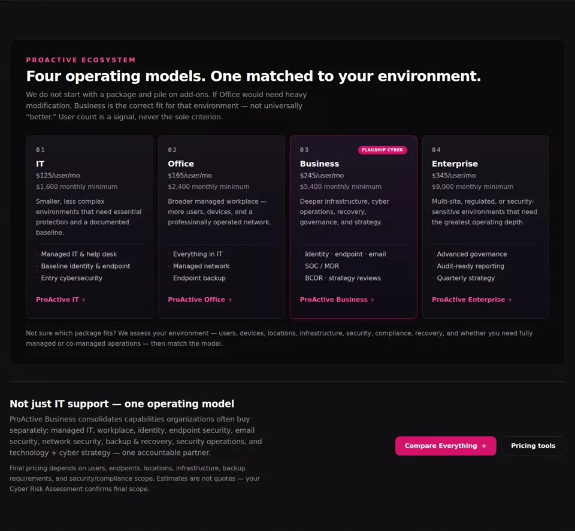
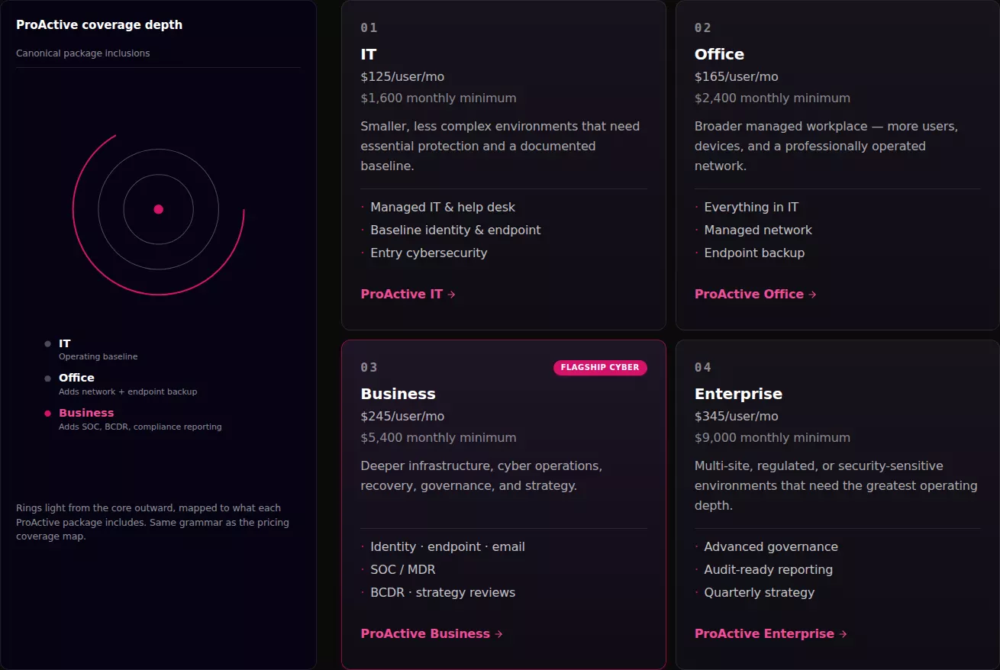
The coverage-depth rings now sit beside the tiers, drawn from the same coverage data the pricing map uses. The lit depth follows the tier under the pointer and rests on the flagship. Tier names, inclusions, and links are unchanged.
Security & compliance report

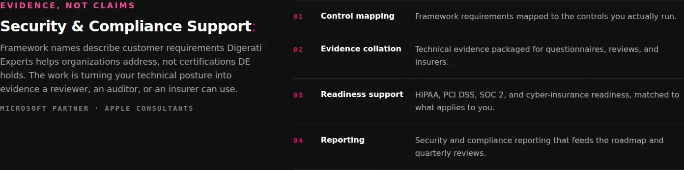
The framework claims became “Evidence, not claims”: four outputs DE actually produces (control mapping, evidence collation, readiness support, reporting) and one plain sentence that framework names describe customer requirements, not certifications DE holds. Partner marks are reduced to a mono line.
Start with a Cyber Risk Assessment

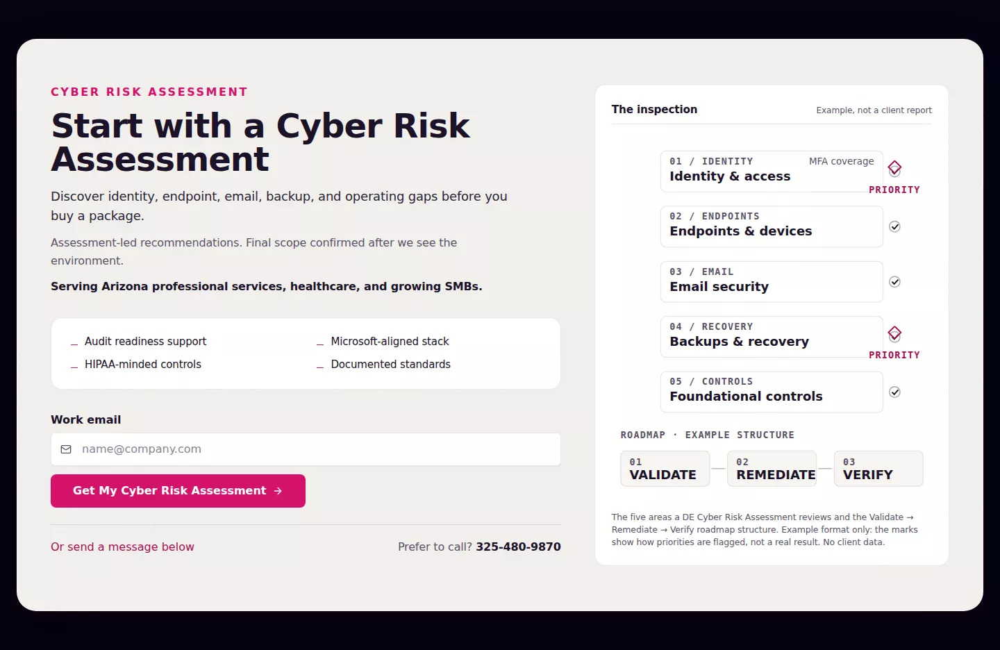
The existing copy and work-email form now sit beside “The inspection”: the five areas a Cyber Risk Assessment reviews, how priorities are flagged, and the Validate, Remediate, Verify roadmap structure. The figure and its caption both say it is an example of the format, not a result.
The same sections on a phone
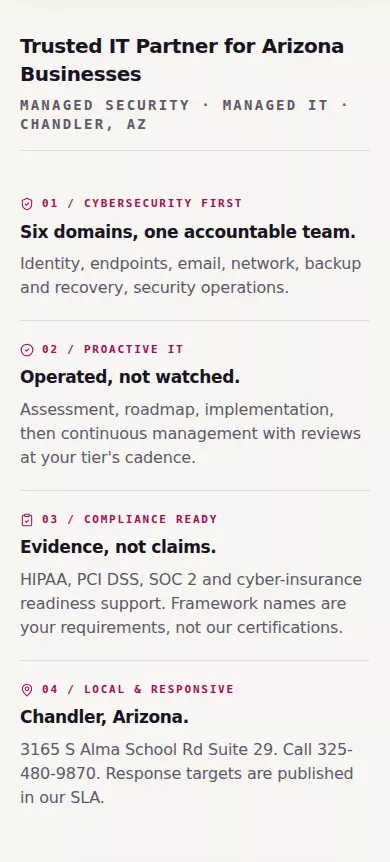
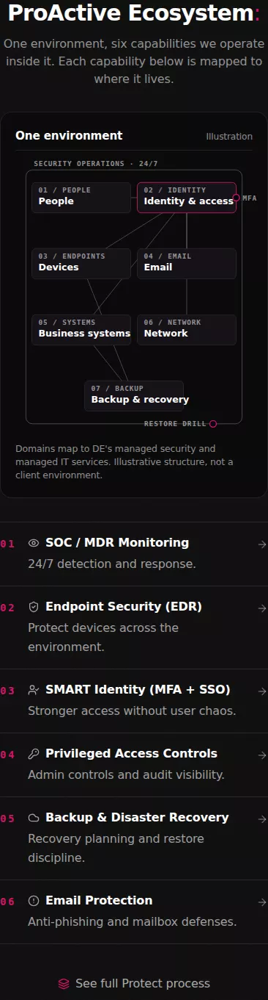

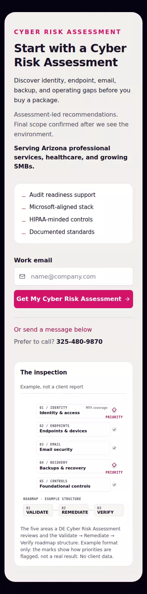
Corrections after Joe’s review
| Finding | What changed |
|---|---|
| “Client proof” showed DE Desk, DE’s own product | Section renamed “How DE delivers”; the frame is titled as DE’s own product. Real client evidence stays the reviews feed. |
| Trust strip promised a one-business-day response while the report said none was added | Line replaced with “Response targets are published in our SLA.” The hero’s pre-existing line keeps its SLA basis. All claims on / and /v2 registered in docs/CLAIMS-REGISTER.md; unsupported ones marked for Joe. |
| Classification badges read as internal production language | Plain-language disclosure everywhere: “Illustration”, “Example, not a client report”, “Real, details removed”, “Live data”. Codes stay on data-classification. |
| Diagrams too dense and small on mobile | Narrow layouts step the type up (14 px labels), widen nodes, and show one stage per viewport. Persuasion moves to the asset families in scrollcraft/ASSET-PLAN.md. |
| /v2 too long and concept-heavy for the homepage; conversion too late; fourteen domains | Recorded as rules in scrollcraft/EXPERIENCE-PLAN.md §09: /v2 becomes a “Why DE” story candidate, conversion in the first viewport, six domains lead, eight viewport-heights budget. |
| Statistical and security claims need source-and-date validation | docs/CLAIMS-REGISTER.md: every figure on / and /v2 traced to cyberAwarenessFacts.ts (source, year, URL); service claims traced to the SLA; four operational promises flagged for Joe. |
| Six plates are one texture, not an asset system; no KIE spend before a scene-by-scene plan | scrollcraft/ASSET-PLAN.md: plate verdict (keep two), art-direction rules, eight asset families with page, buyer purpose, composition, crops, motion, conversion role, route, provenance. Spend gate: approved rows only. |
What Joe decides
- Merge PR #178, which puts these nine sections on the live homepage with the next deploy. I do not merge.
- Whether the classification labels (ILLUSTRATIVE, EXAMPLE, SANITIZED_REAL) stay visible in production copy or move to a tooltip. They are visible now, per design/VISUAL_EVIDENCE.md.
- Whether any of the three optional sections should be developed next.
What is deliberately not here
- No testimonials, client names, or percentages were added. One response-time line was added to the trust strip and then removed after review; every claim on the page is now listed with its basis in docs/CLAIMS-REGISTER.md.
- The Six Domains command deck, the pricing tiers, the lead form, and the newsletter block are unchanged.
- The hero H1 and both hero buttons are untouched, so the homepage smoke guardrail keeps its locators.
Captures: Chromium, reduced motion, production build served locally from this branch. “Before” crops are the same sections from the main build. Full-width captures are shown at their real proportions; nothing is mocked.